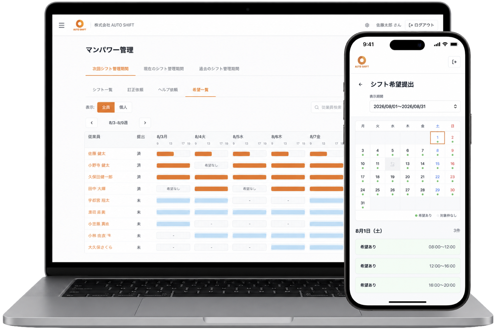
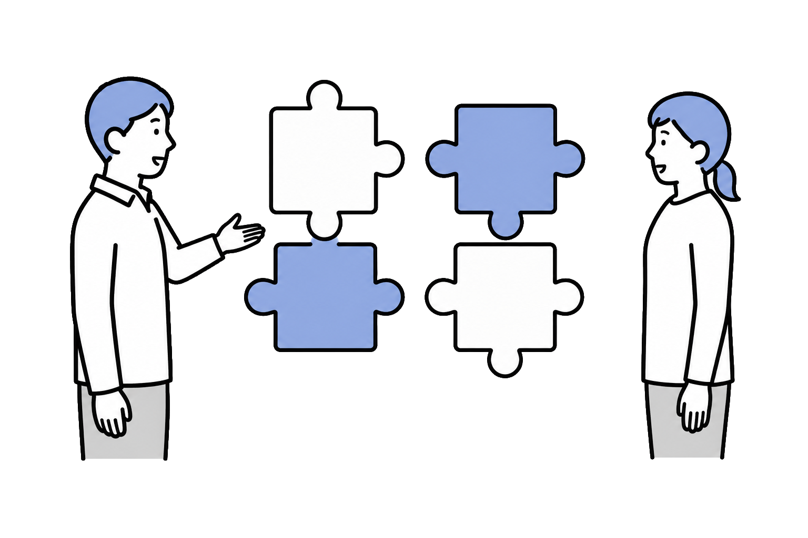
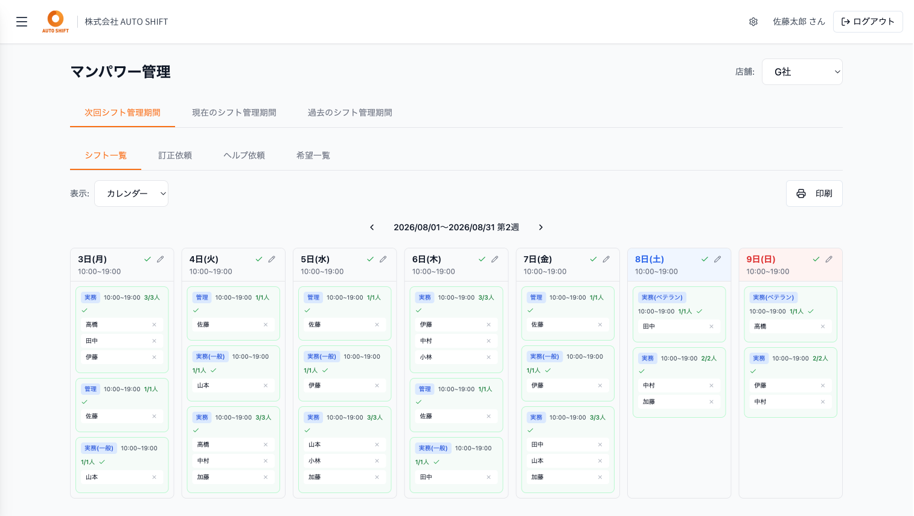
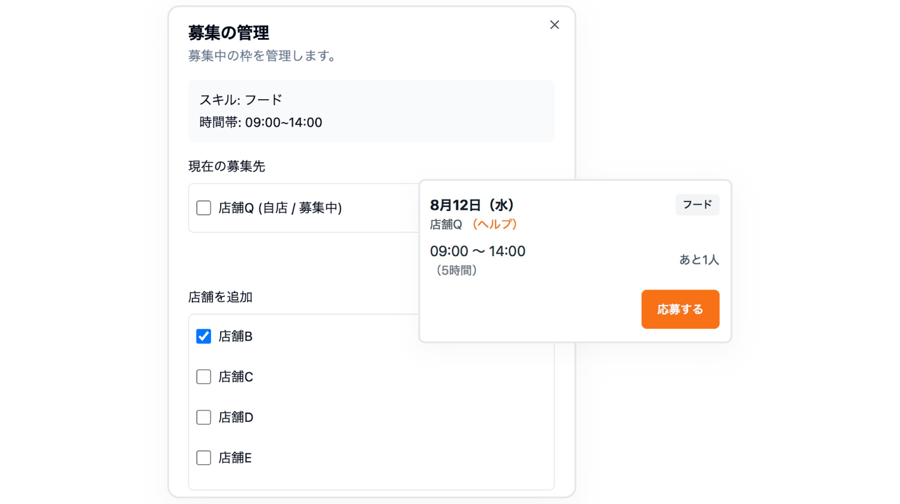
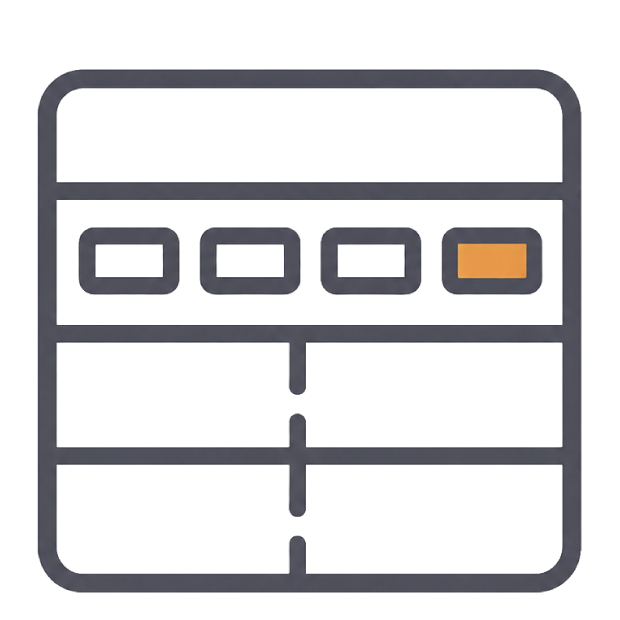
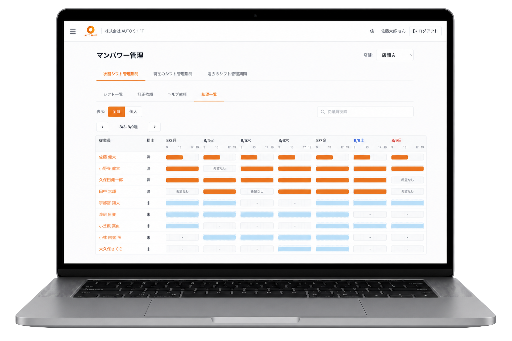
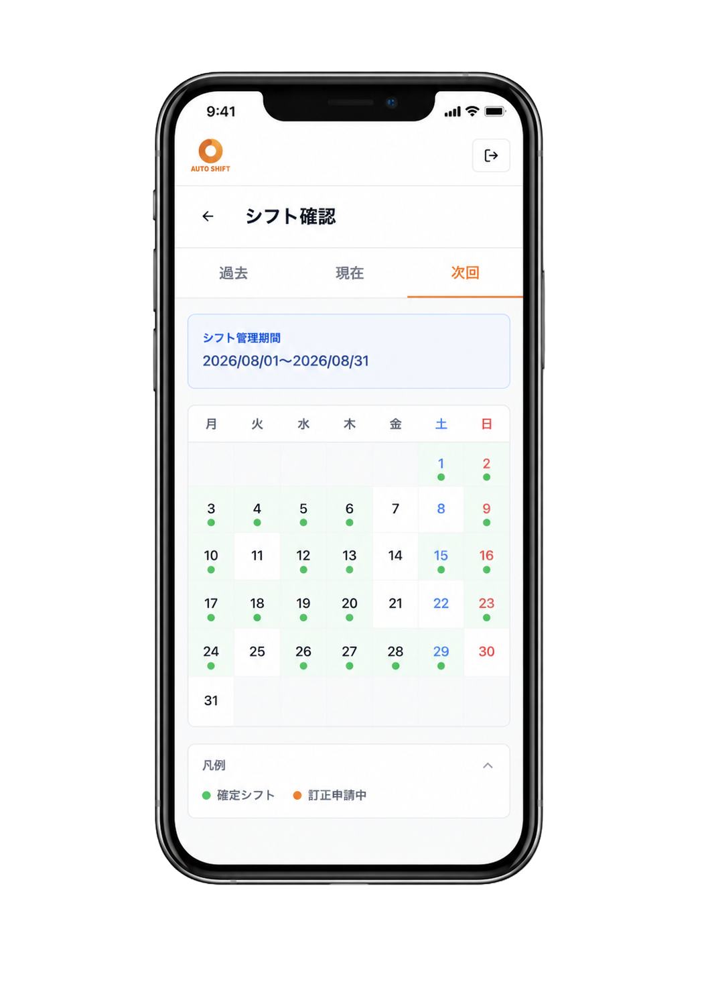

人数合わせのシフトから、
“戦力で組む”
シフトへ。
希望回収からシフト作成、欠員対応まで。
スキルや勤務条件を考慮して、
現場が回るシフトづくりを自動化します。
※月額料金は税抜です。
※LINE通知は1通3円の送信実費が別途かかります。

こんなシフト管理に、
時間を取られていませんか？
希望の回収・催促が大変
スタッフごとに提出状況を確認して、未提出者には個別に連絡。
条件を考えるほど、
シフト作成が複雑に
希望だけでなく、スキルや勤務時間、連勤なども考えながら一人ずつ調整。

人数は足りているのに、
現場が回らない
必要なスキルを持つスタッフが偏り、人数だけでは解決できないことも。
欠員が出るたびに、
スタッフを探す
急な欠員が出るたび、電話やLINEで一人ずつ確認。
毎月繰り返すシフト管理だからこそ、
もっとシンプルに。
AUTO SHIFTなら、
条件を考慮してシフトを自動生成。
希望回収から条件判定、
欠員が出た後の募集まで、
システム上で完結します。
AUTO SHIFTなら、
シフト作成は、もっとスマートに。
希望を集めるところから、シフト作成、欠員対応まで。
これまで手間がかかっていたシフト管理を、AUTO SHIFTが効率化します。
希望を提出
スタッフがスマホから勤務希望を提出。
条件を自動判定
希望やスキル、勤務条件などを自動でチェック。
シフトを自動生成
設定した条件をもとに、シフトを自動で生成。
欠員が発生
必要人数に満たない枠を自動で判定。
スタッフへ募集
不足している勤務枠をスタッフへ公開。
応募・確定
スタッフが応募すると、そのままシフトに反映。
ただ自動で組むだけじゃない。
AUTO SHIFTが選ばれる3つの理由
スキル × レベルで
“回る”配置に
スタッフごとにスキルとレベルを設定。
必要なスキル・レベル・人数を考慮して、
現場が回る配置をつくります。
締切後は毎日、
全自動で生成
スタッフの希望や公平性、
連勤・労働時間の上限などを考慮して、
シフトを自動で生成します。
希望の変更などがあった場合も、
条件をもとに毎日再計算します。

欠員は“仕組み”で補充
不足している勤務枠をスタッフへ公開。
応募があれば、そのままシフトに反映されます。
店舗間のヘルプにも対応し、
複数店舗で人員を調整できます。

シフト管理に必要な機能を、
ひとつに。
管理者のシフト作成から、
スタッフの希望提出・確認まで。
毎日のシフト管理をシンプルにします。
シフト希望を自動回収
スタッフはスマホから簡単に希望を提出。提出内容を自動で回収し、未提出者へのリマインドも自動で行います。

提出状況をひと目で確認
誰が提出済みで、誰が未提出なのかを一覧表示。確認漏れを防ぎます。
充足状況を事前にチェック
必要人数に対して人員が足りるかをシフト生成前に確認できます。
店舗間でヘルプを募集
不足している勤務枠を他店舗へ公開。店舗をまたいだ人員調整をスムーズにします。
シフト訂正依頼もシステム上で
スタッフからシフトの訂正を申請。管理者は内容を確認して対応できます。
LINE・メールで自動通知
受付開始・締切・確定などをLINEに自動送信。LINE未連携でもメールで受け取れます。
シフト管理ツールなら、
どれも同じ？
AUTO SHIFTは、
“管理する”だけでなく、
“現場が回るシフトを組む”ところまで。
希望回収やシフト共有だけでなく、
スキルや勤務条件を考慮した自動生成から
欠員対応までをサポートします。
| 比較項目 | AUTO SHIFT | 一般的な シフト管理ツール |
|---|---|---|
| スキル（担当業務）の指定 | ○ | ○ |
| スキル“レベル”まで指定して質を担保 | ◎ | △ |
| 締切後の完全自動生成（毎日再計算） | ◎ | △ |
| 希望に沿いつつ勤務日数を公平化 | ◎ | △ |
| 不足枠は従業員がセルフ応募（即時確定） | ◎ | △ |
| 店舗間のヘルプ依頼 | ◎ | △ |
| 労働法の自動順守（連勤・勤務時間の上限） | ○ | ○ |
| LINE通知・LINEログイン | ○ | ○ |
※一般的なシフト管理サービスとの機能傾向を比較したものです。
各サービスの仕様・プランによって利用できる機能は異なります。
管理者だけじゃない。
スタッフにも使いやすく。
管理する人の負担を軽く
- 希望提出状況を一覧で確認
- 未提出者へのリマインドを自動化
- 条件を考慮してシフトを自動生成
- 不足枠の募集もシステム上で完結

いつものスマホでかんたん操作
- スマホから希望を提出
- 確定したシフトをいつでも確認
- シフトの訂正依頼もオンラインで
- 受付開始や確定をLINEでお知らせ

確定したシフトを
お知らせします。
専用アプリのインストールは不要。
LINE未連携の場合はメールで通知を受け取れます。
導入すると、
シフト管理がこう変わる
管理者が対応するのは、
本当に必要なときだけ。
シフト管理にかかっていた時間を、店舗運営やスタッフとのコミュニケーションなど、
本来の業務に活用できます。
料金は、
シンプルな店舗定額。
希望回収からシフトの自動生成、欠員対応まで。
日々のシフト管理を支える機能を、まとめてご利用いただけます。
追加料金なし
※実際に送信した分のみ発生します。
自社のシフトでも使えそう？
まずは実際の画面をご覧ください。
AUTO SHIFTの操作画面を見ながら、機能や使い方をご紹介します。
オンラインで約15分。導入についてのご質問もお気軽にご相談ください。
導入までの流れ
ご相談から運用開始まで、
導入をサポートします。
お問い合わせ
まずは無料デモをご予約ください。
オンラインデモ
実際の画面を見ながら、機能や使い方をご説明します。
初期設定
店舗情報やシフト条件など、運用に必要な設定を行います。
スタッフ登録
スタッフをAUTO SHIFTへ登録します。
運用スタート
希望回収からシフト作成まで、AUTO SHIFTでの運用を開始します。
よくあるご質問
※その他のご質問は、お気軽にお問い合わせください。
Q.従業員が増えても料金は変わりませんか？
Q.月額料金以外に費用はかかりますか？
Q.LINEを使っていないスタッフがいても大丈夫ですか？
Q.スタッフはスマホだけで利用できますか？
Q.複数店舗でも利用できますか？
Q.導入時の設定が不安です。
まずは15分、
画面をご覧ください。
「自社のシフト運用に合うか知りたい」
「実際の操作を見てみたい」
そんな段階でも大丈夫です。
実際の画面を見ながら、
AUTO SHIFTの機能や使い方をご紹介します。